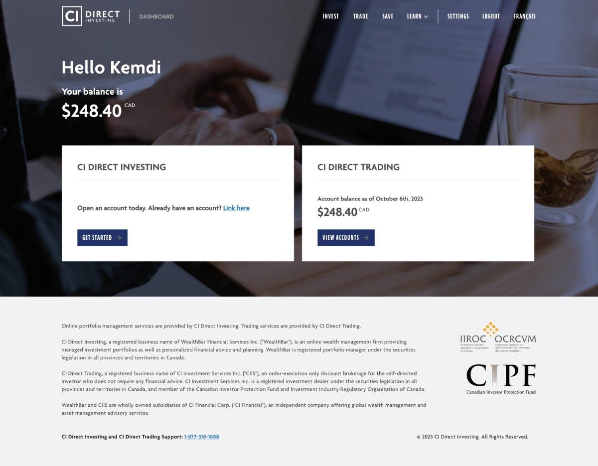
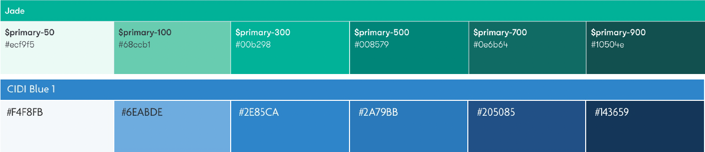
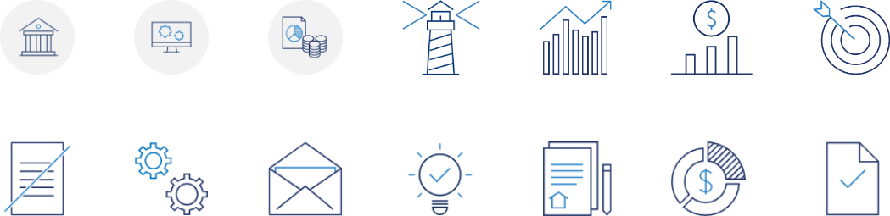
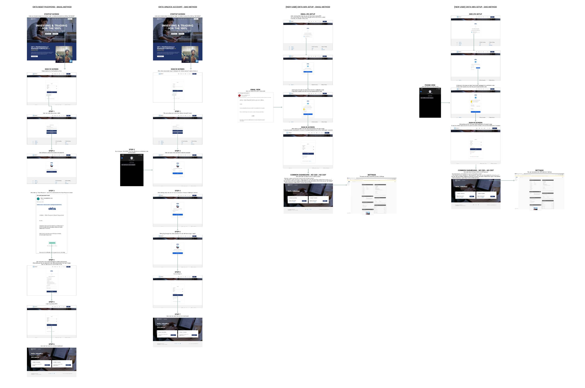
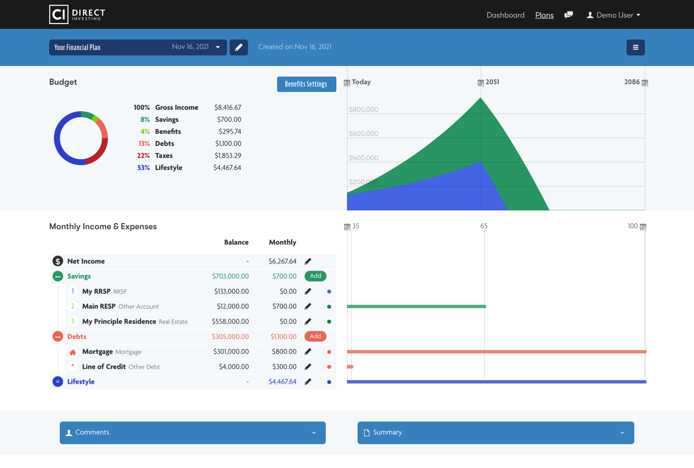

Project Summary
Project Summary
Wealthbar's integration into CI included the collaboration of CI Direct Investment (prev. wealthbar) with CI Direct Trading (prev. virtual brokers). Creating a dashboard that showcased this integration was a highly important stakeholder request. As a designer on the project, I was in several stakeholder meetings where we discussed what we were going for and the aim of the overall experience.

Research
Design
The first step included updating the client onboarding process. This consisted of updating the user journey, color palette and icons
 Design checklist:

What are the top level brand goals for CI Direct and/or the Trading and Investing sub-brands?
It would be helpful for us to understand how CI Direct brand and each sub-brand plans to differentiate from the banks’ trading apps and other competitors like WealthSimple. Here is our current sense of the previous high-level brand and product direction for the two apps. In what ways should these descriptions change or be refined based on the vision going forward?
How do we want customers to see our offerings as being superior to the established banks’ investing products?
How do we want customers to see our offerings as being superior to products like WealthSimple?
Here are some more concrete brand adjectives - how important are these to the CI Direct brand experience? (1-5 rating)
Other than CID Investing focusing its colour scheme on the Cobalt brand colour and CID Trading focusing its scheme on the Sapphire colour, what other brand and product strategy differences are there between the two products?
We’ve historically thought of CI Direct’s most important target customers as professional Canadians roughly in the 30-55 year old age bracket. Is this the most important demographic when we’re considering how the design will be received?
Are there any visual references from apps or design systems that you’ve used or seen that you think are particularly good examples of some of the key brand goals?
Are there any other brand or competitive positioning goals you could share?
 